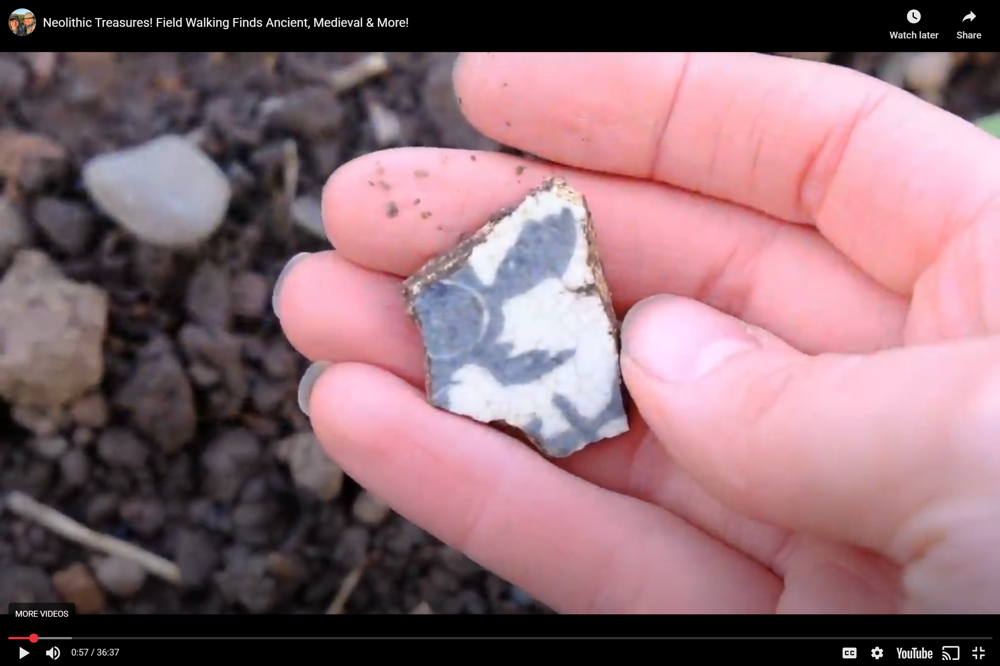
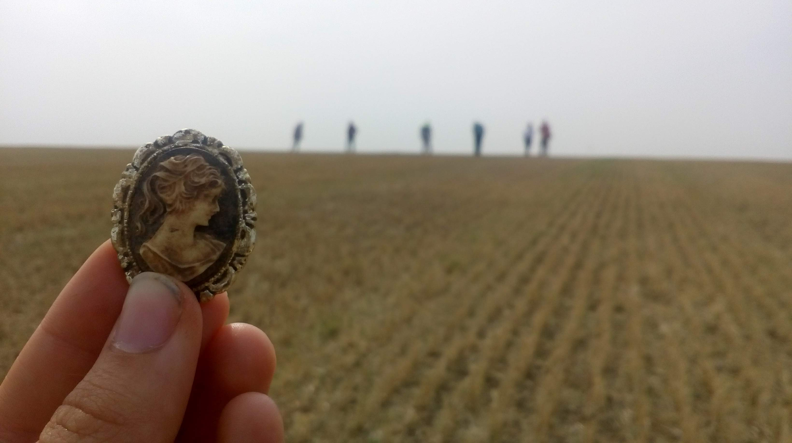
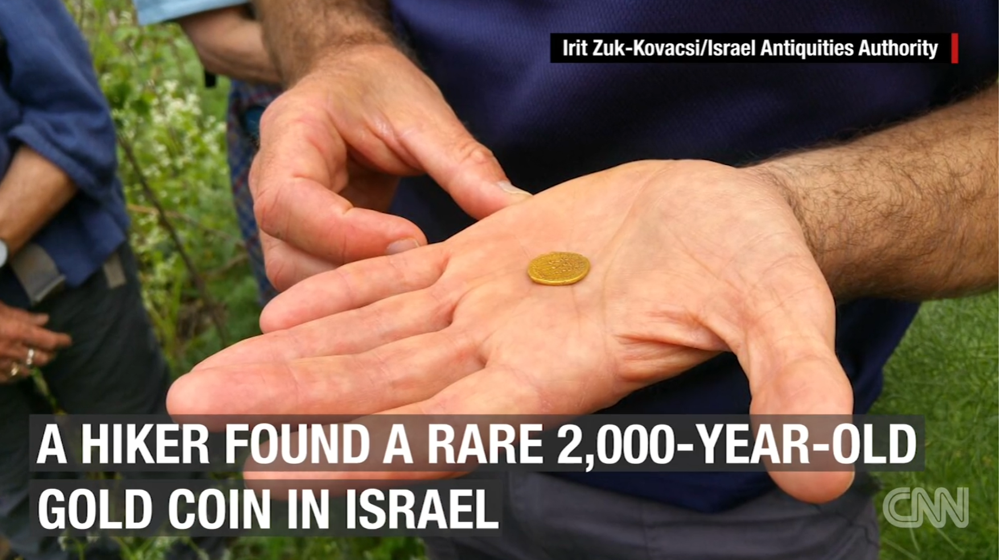
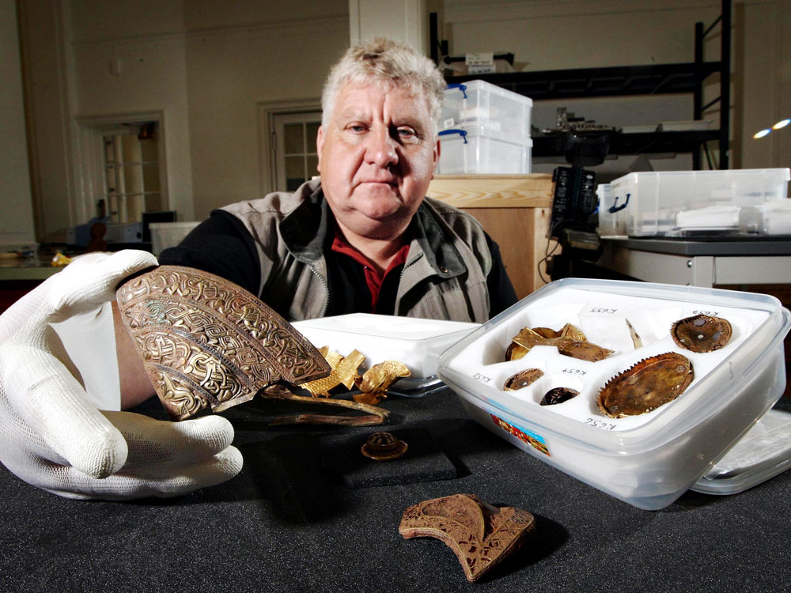
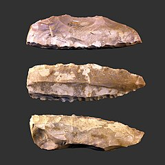
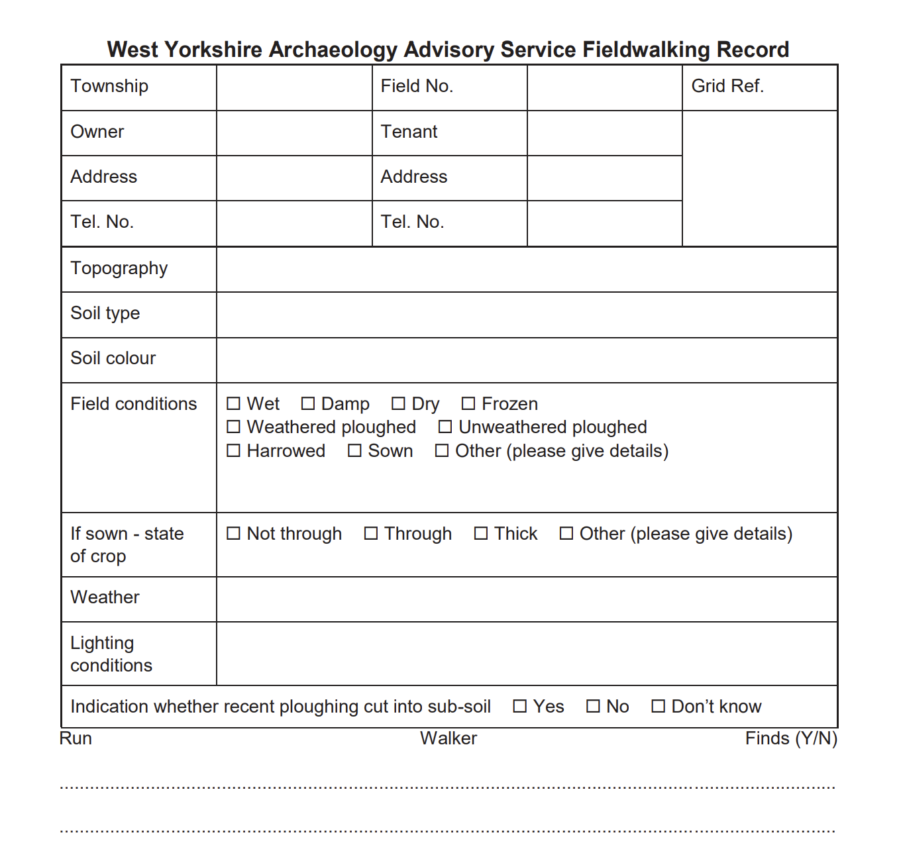

Neolithic Treasures
Scotland

Northern Mudlarks return to the "Field of Dreams" for a treasure hunt spanning centuries. They uncover a diverse collection, from ancient flint tools to 16th-century pipe bowls and modern trinkets.
Watch VideoIsle of Axholme
Lincolnshire, England

Volunteer-led field walking project that uncovered 4,000 years of history in a single day, revealing Neolithic arrowheads, Roman pottery, and medieval artifacts spanning multiple periods.
Read Case StudyEastern Galilee Gold Coin
Eastern Galilee, Israel

Discovery of an extremely rare 2,000-year-old Roman gold coin of Emperor Augustus minted by Trajan, found by a hiker near the Sea of Galilee and now one of only two known in existence worldwide.
Read Case StudyStaffordshire Hoard
Staffordshire, England

Discovery of the largest ever hoard of Anglo-Saxon gold (5kg of gold and 2.5kg of silver) through metal detecting and subsequent archaeological investigation, reshaping understanding of 7th-century Mercia.
Read Case StudyGrand-Pressigny
Indre et Loire, France

Explore systematic fieldwalking methodology used to discover the largest prehistoric flint blades (8.86 to 14.76 inches) in the world, demonstrating non-destructive surface survey techniques.
Read Case StudyField Walking Record
West Yorkshire

Explore comprehensive guides on archaeological field walking methodologies across Northern European landscapes and prehistoric settlements.
Read Case StudyPewsey & Wiltshire
England, United Kingdom
Discover field walking methodologies used in the chalk downlands of Wiltshire, a region rich with Bronze Age and Iron Age settlements.
Read Case StudyTimucuan
Florida, United States
Discover the Native American heritage of Florida through field archaeology at the Timucuan Preserve, featuring diverse cultural sites.
Read Case StudyMediterranean
Mediterranean Region
Learn about archaeological field surveys in the Mediterranean, featuring classical sites and modern excavation techniques.
Read Case Study